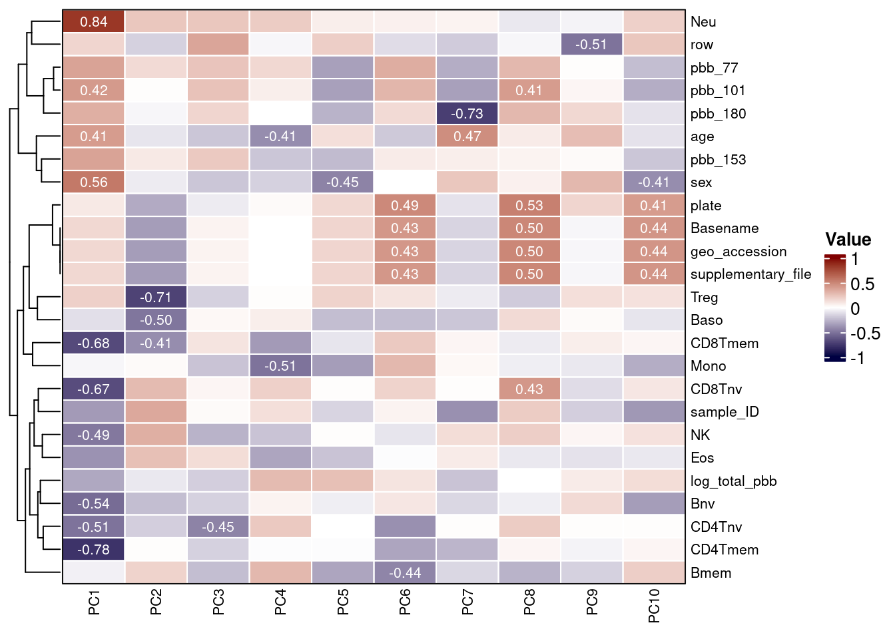
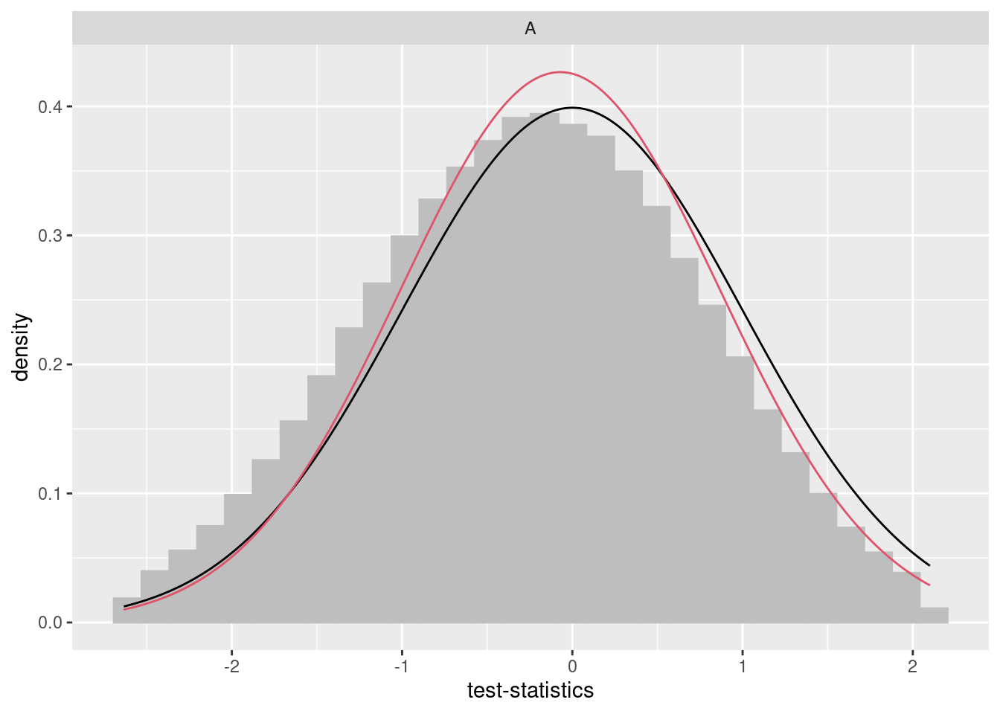
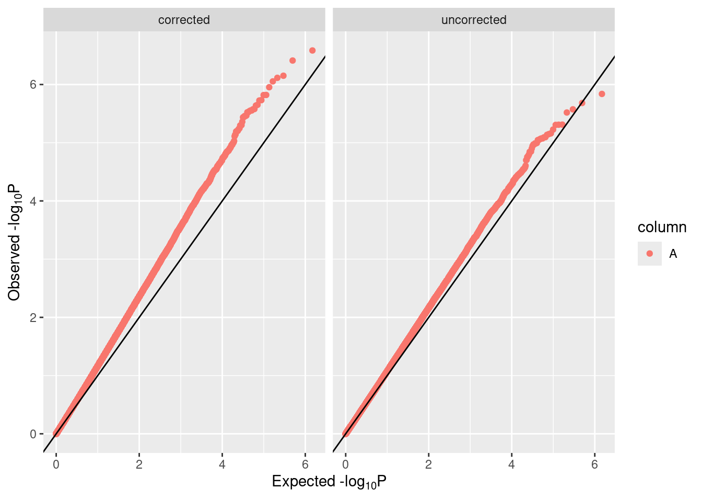

Imputation is often required in DNAm studies, such as to ensure phenotype predictors have access to complete unbiased data or for algorithms that cannot accept NA values like SVA. Various options are available, including:
impute.knn from impute, a package for imputation of microarray dataAlthough in-depth benchmarking is yet to be completed, we outline the use of methyLImp2 for imputation to create a complete matrix of beta values.
Of note, EPICv2 CpGs have technical suffixes for CpG names, which predictors may not be updated for. Additionally, CpGs have up to 10 replicates. We advise selecting one of these at random to use in prediction, or selecting the one with the best performing detection p-value, which can be inspected using detectionP() from minfi.
The main function methyLImp2 can take a SummarizedExperiment or beta matrix as input, and requires the array type to be specified (as 450k or EPIC). By default it will overwrite your SummarizedExperiment object.
## used (Mb) gc trigger (Mb) max used (Mb)
## Ncells 14476392 773.2 25628198 1368.7 16347305 873.1
## Vcells 2609612579 19909.8 5186847099 39572.6 5012732170 38244.2We can extract betas for use in our predictors, and reduce precision as described earlier.
Principal components (PCs) of the beta values can be calculated using prcomp as before to investigate variables important to adjust for in the EWAS analysis.
Each column in the RGset colData should be considered as a potential covariate in EWAS models. Both technical and biological factors should be investigated as these may introduce batch effects or be clinically relevant. In order to assess this, you can visualize correlations with PCs as done previously in this workflow.
Any constant variables are removed from the heatmap, as they will not explain variance in the data.
plot_vars <- apply(targets, 2, function(x) sd(as.numeric(factor(x)), na.rm=T))
plot_vars <- names(plot_vars[!plot_vars %in% c(NA, 0)])
plot_vars## [1] "sample_ID" "geo_accession" "sex"
## [4] "age" "log_total_pbb" "pbb_153"
## [7] "pbb_77" "pbb_101" "pbb_180"
## [10] "supplementary_file" "plate" "row"
## [13] "Basename" "CD4Tnv" "Baso"
## [16] "CD4Tmem" "Bmem" "Bnv"
## [19] "Treg" "CD8Tmem" "CD8Tnv"
## [22] "Eos" "NK" "Neu"
## [25] "Mono"All variables are then converted to numeric and correlations between them and the PCs are calculated.
heatmap_df <- apply(heatmap_df, 2, function(x) as.numeric(factor(x)))
cxy <- round(cor(pca$x, scale(heatmap_df), use="pairwise.complete.obs"),2) A heatmap can then be used to visualize these correlations and uncover measured variables that explain a large proportion of DNAm variance.
col_fun <- colorRamp2(c(-1, 0, 1), c("#000042", "white", "#800000"))
Heatmap(
t(cxy),
col = col_fun,
border = 'grey5',
cluster_columns = FALSE,
show_row_dend = TRUE,
show_column_dend = FALSE,
name = "Value",
row_names_gp = gpar(fontsize = 8),
column_names_gp = gpar(fontsize = 8),
cell_fun = function(j, i, x, y, width, height, fill) {
grid.rect(x, y, width, height,
gp = gpar(col = "white", lwd = 1, fill = NA))
grid.text(ifelse(abs(t(cxy)[i,j]) > 0.4,
sprintf("%.2f", round(t(cxy)[i, j], 2)),
""),
x, y, gp = gpar(fontsize = 8, col = "white"))
}
)
By examining the correlations in the data, we can build our model in a more informed manner. The second PC is highly correlated with sex and, as is usual in EWAS, we intend to include this as a confounder.
Some predicted cell counts appear of substantial importance and we advise also adjusting for these. Model specification should be informed by a combination of prior knowledge and inspection of patterns in the data.
The sva package contains functions for removing batch effects and other unwanted variation in high-throughput experiments. Specifically, the sva package contains functions for the identifying and building surrogate variables for high-dimensional data sets. Surrogate variables are covariates constructed directly from high-dimensional data (like DNAm data) that can be used in subsequent analyses to adjust for unknown, unmodeled, or latent sources of noise.
The sva package can be used to remove artifacts in three ways:
Removing batch effects and using surrogate variables in differential expression analysis have been shown to reduce dependence, stabilize error rate estimates, and improve reproducibility23,26. In addition to SVA, the cate package provides a related framework that also estimates latent factors to account for unobserved confounders in high-dimensional data, and was previously the standard approach in epigenome-wide pipelines.
The full model and null model are specified with and without the variable of interest respectively. In this case, we adjust for sex, age, plate, row, CD4Tnv, Baso, CD4Tmem, Bmem, Bnv, Treg, CD8Tmem, CD8Tnv, Eos, NK, and Mono. Neutrophils are excluded to avoid collinearity as all predicted cell counts sum to 1.
mod = model.matrix(~log_total_pbb + age + sex + plate + row + CD4Tnv + Baso + CD4Tmem + Bmem + Bnv + Treg + CD8Tmem + CD8Tnv + Eos + NK + Mono, data=targets)
mod0 = model.matrix(~age + sex + plate + row + CD4Tnv + Baso + CD4Tmem + Bmem + Bnv + Treg + CD8Tmem + CD8Tnv + Eos + NK + Mono,data=targets)This can then be used to estimate the appropriate number of latent factors to calculate.
The latent factors can then be calculated with the sva function:
These can then be added to targets to include in the EWAS model.
sv_df <- as.data.frame(svobj$sv)
colnames(sv_df) <- c('SV1', 'SV2', 'SV3', 'SV4')
targets <- cbind(targets, sv_df)Limma27 is a package with excellent documentation that can be useful for smaller samples, due to the optional empirical Bayes step. Other packages that may be of interest for running EWAS include gee and cate.
In order to run an EWAS a formula needs to be specified based on the above exploratory analyses and SVA.
You can then use this formula to create a design matrix.
## (Intercept) log_total_pbb age sexMale
## GSM3228585_200550980034_R01C01 1 -0.8658353 55.28 1
## GSM3228586_200550980034_R02C01 1 2.8849069 64.10 1
## plate200590490002 plate200590490017 row
## GSM3228585_200550980034_R01C01 0 0 1
## GSM3228586_200550980034_R02C01 0 0 2
## CD4Tnv Baso CD4Tmem Bmem
## GSM3228585_200550980034_R01C01 0.09328471 0.003562398 0.07195387 0.018908700
## GSM3228586_200550980034_R02C01 0.03812931 0.000000000 0.00000000 0.003811923
## Bnv Treg CD8Tmem CD8Tnv Eos
## GSM3228585_200550980034_R01C01 0.06571205 0.02828104 0.03023737 0.0000000 0
## GSM3228586_200550980034_R02C01 0.01215000 0.01575635 0.02725871 0.0157666 0
## NK Mono
## GSM3228585_200550980034_R01C01 0.02254163 0.05767124
## GSM3228586_200550980034_R02C01 0.02308257 0.14532083Random effects can be included using duplicateCorrelation and specifying the block argument. This is useful for paired experiments, not used in this example, but with example code shown here.
Models are fit using lmFit.
Models can also be fit for random effects using the dupcor object created above.
fit <- lmFit(betas, design,
block = colData(methData)$ID,
correlation = dupcor$consensus.correlation)Results can then be extracted from the fit object, including the:
coefsetstatpval, andncoef <- fit$coefficients[, 2]
se <- fit$stdev.unscaled[, 2] * fit$sigma
tstat <- coef / se
pval <- 2 * pt(-abs(tstat), fit$df.residual)
n <- ncol(design) + fit$df.residualbaconWe developed a package called bacon11 to estimate and correct for bias and inflation of test statistics in EWAS. This maximizes power while properly controlling the false positive rate, by estimating the empirical null distribution using Bayesian statistics. The utility of the tool was illustrated through the application of meta-analysis by performing epigenome- and transcriptome-wide association studies (EWASs/TWAS) on age and smoking which highlighted an overlap in differential methylation and expression of associated genes. However, it is important to note that this approach may not work well on smaller datasets and diagnostic plots are essential when applied in this setting (i.e. fewer than 200 samples).
We advise using bacon to estimate inflation and bias often observed in EWAS. This object can then be printed to report the estimated bias and inflation.
## Use multinomial weighted sampling...## threshold = -5.3983
## Starting values:
## p0 = 0.9781, p1 = 0.0167, p2 = 0.0052
## mu0 = 0.4689, mu1 = 6.6275, mu2 = -5.6898
## sigma0 = 1.1408, sigma1 = 1.1408, sigma2 = 1.1408## Bacon-object containing 1 set(s) of 744846 test-statistics.
## ...estimated bias: 0.37.
## ...estimated inflation: 0.82.
##
## Empirical null estimates are based on 5000 iterations with a burnin-period of 2000.P-values and t-statistics can then be adjusted
Bacon also provides some visualizations of its performance, which can come in handy. In addition to inspecting diagnostic plots using traces, posteriors, and fit, checking the QQ plots as shown below is an essential step.
## `stat_bin()` using `bins = 30`. Pick better value with `binwidth`.

Additionally, rerunning bacon can provide an estimate of any residual bias or inflation.
## Use multinomial weighted sampling...## threshold = -5.3983
## Starting values:
## p0 = 0.9781, p1 = 0.0167, p2 = 0.0052
## mu0 = 0.1230, mu1 = 7.6188, mu2 = -7.3728
## sigma0 = 1.3885, sigma1 = 1.3885, sigma2 = 1.3885## Bacon-object containing 1 set(s) of 744846 test-statistics.
## ...estimated bias: 0.0018.
## ...estimated inflation: 1.
##
## Empirical null estimates are based on 5000 iterations with a burnin-period of 2000.Bacon-adjusted results can then be saved, for use in downstream analysis.
limma_base <- data.frame(cpg = rownames(fit$coefficients),
beta = coef, SE = se,
p = pval,
t = tstat, N = n)